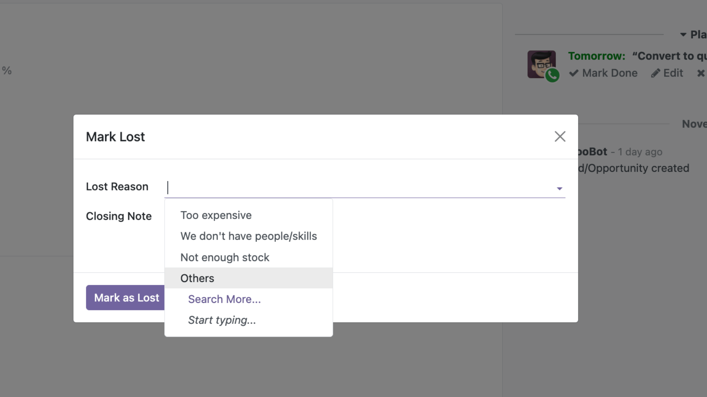
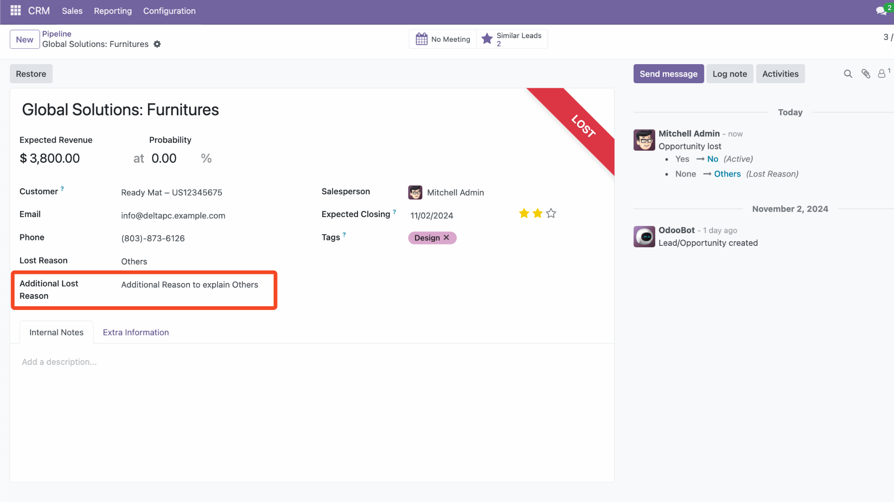

CRM Custom Lost Reason
Enhance your CRM with detailed lost reason tracking
✨ Key Features
-
✓
Add detailed custom reasons when marking leads/opportunities as lost
-
✓
Simple and intuitive interface integrated with standard Odoo CRM
-
✓
View custom lost reason in lead/opportunity form
Screenshot: Lost Reason Form

🔍 How It Works
- Click on 'Mark Lost' for any lead or opportunity
- Select the Others lost reason from the dropdown
- Add additional details in the custom reason field
- Save to record the complete lost reason information
Screenshot: Lost Reason in Lead Form

💡 Benefits
For Sales Teams
-
✓
Quick and easy lost reason documentation
-
✓
Better communication of lost deal reasons
For Managers
-
✓
Detailed insights into lost opportunities
-
✓
Better decision making with complete information
🔧 Compatibility
-
✓
Odoo Version: 17.0
-
✓
Dependencies: CRM
-
✓
Installation: No additional configuration required
📫 Support
For support and customization requests, please contact:
quicksol.odoo.help@gmail.com
We typically respond within 24-48 hours during business days.
Developed by
QuickSol Technologies
Empowering businesses with smart Odoo solutions